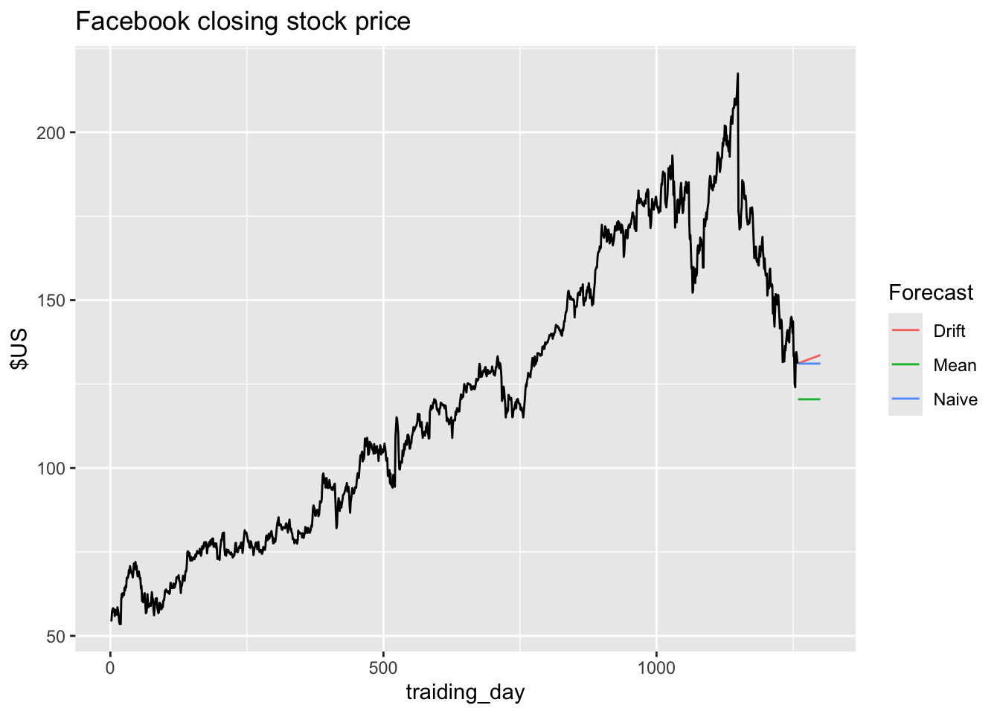
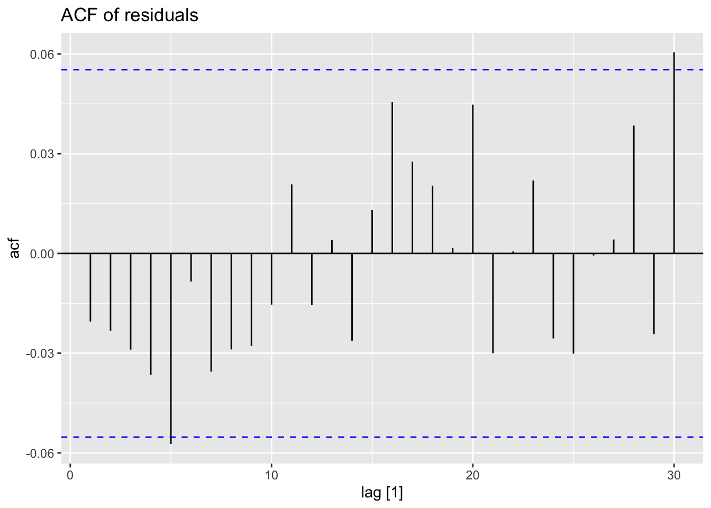
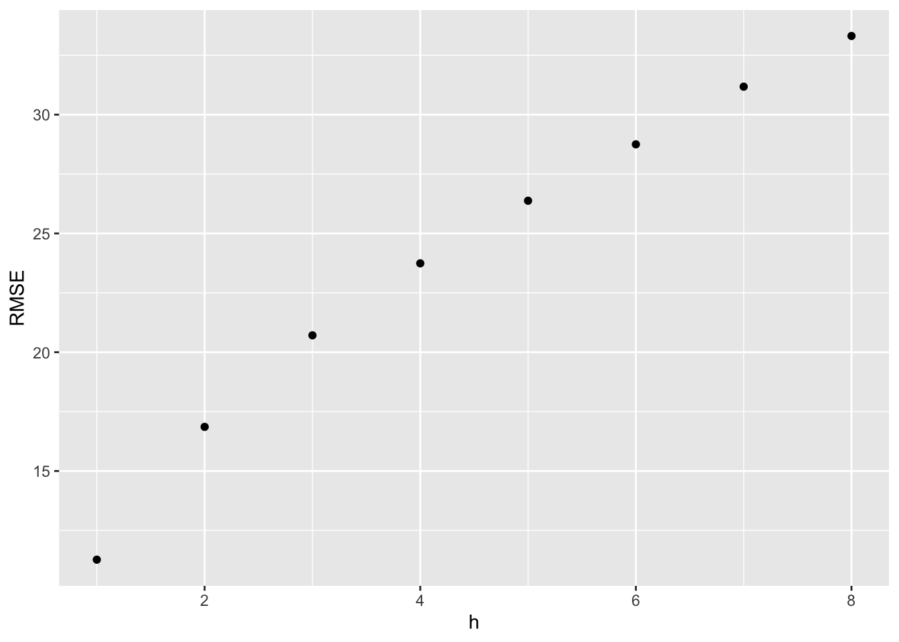
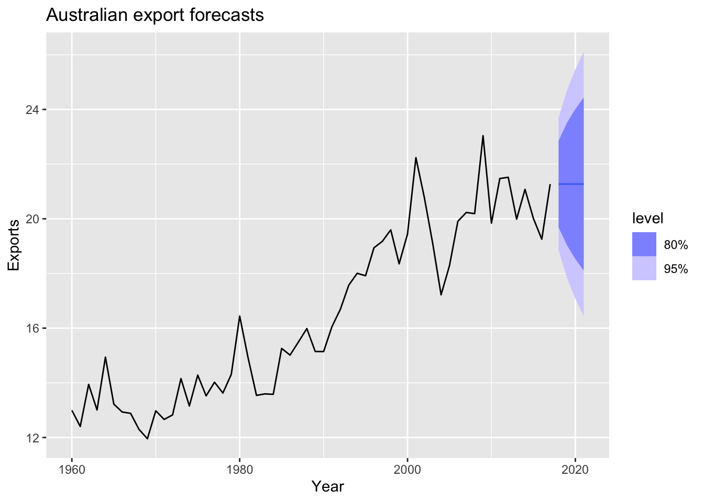
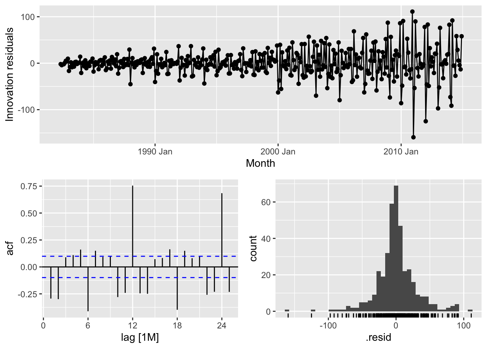

Chapter 5 The forecaster’s toolbox
# loading libraries
library(tsibble)
library(tsibbledata)
library(tidyverse)
# to read data
library(rio)
library(ggplot2)
library(fabletools)
library(feasts)
library(fpp3)
library(latex2exp)
library(forecast)The process of producing forecasts can be split up into a few fundamentals steps:
- Preparing data - generate a
tsibble - Data visualisation
- Specifying a model
- Model estimation - model() -> mable
- Accuracy & performance evaluation
- Producing forecasts - forecast() -> fable
5.1 A tidy forecasting workflow
The process to make a forecast: 
5.1.1 Data preparation (tidy)
## # A tsibble: 15,150 x 10 [1Y]
## # Key: Country [263]
## Country Code Year GDP Growth CPI Imports Exports Population GDP_per_capita
## <fct> <fct> <dbl> <dbl> <dbl> <dbl> <dbl> <dbl> <dbl> <dbl>
## 1 Afghanistan AFG 1960 537777811. NA NA 7.02 4.13 8996351 59.8
## 2 Afghanistan AFG 1961 548888896. NA NA 8.10 4.45 9166764 59.9
## 3 Afghanistan AFG 1962 546666678. NA NA 9.35 4.88 9345868 58.5
## 4 Afghanistan AFG 1963 751111191. NA NA 16.9 9.17 9533954 78.8
## 5 Afghanistan AFG 1964 800000044. NA NA 18.1 8.89 9731361 82.2
## 6 Afghanistan AFG 1965 1006666638. NA NA 21.4 11.3 9938414 101.
## 7 Afghanistan AFG 1966 1399999967. NA NA 18.6 8.57 10152331 138.
## 8 Afghanistan AFG 1967 1673333418. NA NA 14.2 6.77 10372630 161.
## 9 Afghanistan AFG 1968 1373333367. NA NA 15.2 8.90 10604346 130.
## 10 Afghanistan AFG 1969 1408888922. NA NA 15.0 10.1 10854428 130.
## # ℹ 15,140 more rows5.1.3 Define a model (specify)
Such as the data has annual frequency, use linear trend model TSLM(GDP_per_capita ~ trend()).
5.1.4 Train the model (estimate)
## Warning: 7 errors (1 unique) encountered for trend_model
## [7] 0 (non-NA) cases## # A mable: 263 x 2
## # Key: Country [263]
## Country trend_model
## <fct> <model>
## 1 Afghanistan <TSLM>
## 2 Albania <TSLM>
## 3 Algeria <TSLM>
## 4 American Samoa <TSLM>
## 5 Andorra <TSLM>
## 6 Angola <TSLM>
## 7 Antigua and Barbuda <TSLM>
## 8 Arab World <TSLM>
## 9 Argentina <TSLM>
## 10 Armenia <TSLM>
## # ℹ 253 more rowsThis fits a linear trend model to the GDP per capita data for each combination of key variables in the tsibble.
5.1.5 Check model performance (evaluate)
Once a model has been fitted, it is important to check how well it has performed on the data.
5.1.6 Produce forecasts (forecast)
## # A fable: 789 x 5 [1Y]
## # Key: Country, .model [263]
## Country .model Year GDP_per_capita .mean
## <fct> <chr> <dbl> <dist> <dbl>
## 1 Afghanistan trend_model 2018 N(526, 9653) 526.
## 2 Afghanistan trend_model 2019 N(534, 9689) 534.
## 3 Afghanistan trend_model 2020 N(542, 9727) 542.
## 4 Albania trend_model 2018 N(4716, 476419) 4716.
## 5 Albania trend_model 2019 N(4867, 481086) 4867.
## 6 Albania trend_model 2020 N(5018, 486012) 5018.
## 7 Algeria trend_model 2018 N(4410, 643094) 4410.
## 8 Algeria trend_model 2019 N(4489, 645311) 4489.
## 9 Algeria trend_model 2020 N(4568, 647602) 4568.
## 10 American Samoa trend_model 2018 N(12491, 652926) 12491.
## # ℹ 779 more rowsfit |>
forecast(h = '3 years') |>
filter(Country == 'Sweden') |>
autoplot(gdppc) +
labs(y = '$US', title = 'GDP per capita for Sweden')
5.2 Some simple forecasting methods
Simple methods which could be used as benchmarks or sanity check more complex fancy forecasting.
## # A tsibble: 140 x 2 [1Q]
## Bricks Quarter
## <dbl> <qtr>
## 1 386 1970 Q1
## 2 428 1970 Q2
## 3 434 1970 Q3
## 4 417 1970 Q4
## 5 385 1971 Q1
## 6 433 1971 Q2
## 7 453 1971 Q3
## 8 436 1971 Q4
## 9 399 1972 Q1
## 10 461 1972 Q2
## # ℹ 130 more rows5.2.1 Mean method
MEAN(y): Average method:
- Forecasts of all future values are equal to mean of historical data \(\{y_1, ..., y_T\}\)
- Forecasts: \(\hat y_{T+h|T} = \bar y = (y_1 + ... + y_T)/T\)
bricks |>
model(MEAN(Bricks)) |>
forecast(h = 24) |>
autoplot(bricks, level = NULL) +
annotate("rect", xmin = bricks[1, ]$Quarter,
ymin = mean(bricks$Bricks),
xmax = bricks[nrow(bricks), ]$Quarter,
ymax = mean(bricks$Bricks),
colour = "blue",
linetype = 2) +
labs(title='Clay brick production in Australia')5.2.2 Naiïve method
NAIVE(y):
- Forecasts equals to last observed value.
- Forecasts: \(\hat y_{T+h|T} = y_T\)
- Consequence of efficient market hypothesis
This method works remarkably well for many economic and financial time series.
bricks |>
model(NAIVE(Bricks)) |>
forecast(h = 24) |>
autoplot(bricks, level = NULL) +
annotate("point", x = bricks[nrow(bricks), ]$Quarter,
y = bricks[nrow(bricks), ]$Bricks,
colour = "blue") +
labs(title='Clay brick production in Australia')Because a naïve forecast is optimal when data follow a random walk, these are also called random walk forecasts and the RW() function can be used instead of NAIVE.
5.2.3 Seasonal naïve method
SNAIVE(y ~ lag(m)):
- Forecasts equal to last value from same season
- Forecasts: \(\hat y_{T+h|T} = y_{T+h-m(k+1)}\), where \(m\) = seasonal period and \(k\) is the intereg part of \((h - 1)/m\)
bricks |>
model(SNAIVE(Bricks ~ lag(4))) |> # it is possible to use lag('year') - 4 Quarters
forecast(h = 24) |>
autoplot(bricks, level = NULL) +
# Q4
annotate("point", x = bricks[nrow(bricks), ]$Quarter,
y = bricks[nrow(bricks), ]$Bricks,
colour = "blue") +
# Q3
annotate("point", x = bricks[nrow(bricks)-1, ]$Quarter,
y = bricks[nrow(bricks)-1, ]$Bricks,
colour = "blue") +
# Q2
annotate("point", x = bricks[nrow(bricks)-2, ]$Quarter,
y = bricks[nrow(bricks)-2, ]$Bricks,
colour = "blue") +
# Q1
annotate("point", x = bricks[nrow(bricks)-3, ]$Quarter,
y = bricks[nrow(bricks)-3, ]$Bricks,
colour = "blue") +
labs(title='Clay brick production in Australia')5.2.4 Drift method
RW(y ~ drift()):
- Forecasts equal to last value plus average change
- Forecasts: \[ \hat y_{T+h|T} = y_T + \frac {h} {T - 1} \sum_{t=2}^T(y_t - y_{t-1}) = y_T + \frac {h} {T - 1} (y_t - y_1) \]
- Equivalent to extrapolating a line drawn between first and last observations.
bricks |>
model(RW(Bricks ~ drift())) |>
forecast(h = 24) |>
autoplot(bricks, level = NULL) +
# first point
annotate("point", x = bricks[1, ]$Quarter,
y = bricks[1, ]$Bricks,
colour = "blue") +
# last point
annotate("point", x = bricks[nrow(bricks), ]$Quarter,
y = bricks[nrow(bricks), ]$Bricks,
colour = "blue") +
annotate("segment", x = bricks[1, ]$Quarter,
y = bricks[1, ]$Bricks,
xend = bricks[nrow(bricks), ]$Quarter,
yend = bricks[nrow(bricks), ]$Bricks,
colour = "blue",
linetype = 2) +
labs(title='Clay brick production in Australia')5.2.5 Model fitting
brick_fit <- aus_production |>
filter(!is.na(Bricks)) |>
model(
Seasonal_naive = SNAIVE(Bricks),
Naive = NAIVE(Bricks),
Drift = RW(Bricks ~ drift()),
Mean = MEAN(Bricks)
)
brick_fit## # A mable: 1 x 4
## Seasonal_naive Naive Drift Mean
## <model> <model> <model> <model>
## 1 <SNAIVE> <NAIVE> <RW w/ drift> <MEAN>5.2.6 Producing forecasts
## # A fable: 80 x 4 [1Q]
## # Key: .model [4]
## .model Quarter Bricks .mean
## <chr> <qtr> <dist> <dbl>
## 1 Seasonal_naive 2005 Q3 N(428, 2336) 428
## 2 Seasonal_naive 2005 Q4 N(397, 2336) 397
## 3 Seasonal_naive 2006 Q1 N(355, 2336) 355
## 4 Seasonal_naive 2006 Q2 N(435, 2336) 435
## 5 Seasonal_naive 2006 Q3 N(428, 4672) 428
## 6 Seasonal_naive 2006 Q4 N(397, 4672) 397
## 7 Seasonal_naive 2007 Q1 N(355, 4672) 355
## 8 Seasonal_naive 2007 Q2 N(435, 4672) 435
## 9 Seasonal_naive 2007 Q3 N(428, 7008) 428
## 10 Seasonal_naive 2007 Q4 N(397, 7008) 397
## # ℹ 70 more rows5.2.7 Visualising forecasts
brick_fc |>
autoplot(aus_production, level = NULL) +
labs(title = 'Clay brick production in Australia',
y = 'Millions of bricks') +
guides(colour = guide_legend(title = 'Forecast'))## Warning: Removed 20 rows containing missing values or values outside the scale range (`geom_line()`).5.2.8 Example: Facebook closing stock price
fb_stock <- gafa_stock |>
filter(Symbol == 'FB') |>
mutate(traiding_day = row_number()) |>
update_tsibble(index = traiding_day, regular = TRUE)
fb_stock |>
autoplot(Close)
There is no seasonality.
fb_stock |>
model(
Mean = MEAN(Close),
Naive = NAIVE(Close),
Drift = RW(Close ~ drift())
) |>
forecast(h = 42) |> # forecast for 42 days
autoplot(fb_stock, level = NULL) +
labs(title = 'Facebook closing stock price', y = '$US') +
guides(color = guide_legend(title = 'Forecast'))
5.2.9 Example: Australian quarterly beer production
## Plot variable not specified, automatically selected `y = Beer`# Set training data from 1992 to 2006
train <- aus_production |>
filter_index('1992 Q1' ~ '2006 Q4')
# Fit the model
beer_fit <- train |>
model(
Mean = MEAN(Beer),
`Naïve` = NAIVE(Beer),
`Seasonal Naïve` = SNAIVE(Beer),
Drift = RW(Beer ~ drift())
)
# Generate forecasts for 14 quarters
beer_fc <- beer_fit |>
forecast(h = 14)
# Plot forecasts against actual values
beer_fc |>
autoplot(train, level = NULL) +
autolayer(
filter_index(aus_production, '2007 Q1' ~ .),
color = 'black'
) +
labs(y = 'Megalitres',
title = 'Forecasts for beer production') +
guides(coclor = guide_legend(title = 'Forecast'))## Plot variable not specified, automatically selected `.vars = Beer`5.2.10 Example: Google’s daily closing stock price
… first set up a new time index based on the trading days rather than calendar days
# Re-index based on trading days
google_stock <- gafa_stock |>
filter(Symbol == "GOOG", year(Date) >= 2015) |>
mutate(day = row_number()) |>
update_tsibble(index = day, regular = TRUE)
# Filter the year of interest
google_2015 <- google_stock |> filter(year(Date) == 2015)
# Fit the models
google_fit <- google_2015 |>
model(
Mean = MEAN(Close),
`Naïve` = NAIVE(Close),
Drift = NAIVE(Close ~ drift())
)
# Produce forecasts for the trading days in January 2016
google_jan_2016 <- google_stock |>
filter(yearmonth(Date) == yearmonth("2016 Jan"))
google_fc <- google_fit |>
forecast(new_data = google_jan_2016)
# Plot the forecasts
google_fc |>
autoplot(google_2015, level = NULL) +
autolayer(google_jan_2016, Close, colour = "black") +
labs(y = "$US",
title = "Google daily closing stock prices",
subtitle = "(Jan 2015 - Jan 2016)") +
guides(colour = guide_legend(title = "Forecast"))
Sometimes one of these simple methods will be the best forecasting method available; but in many cases, these methods will serve as benchmarks rather than the method of choice. That is, any forecasting methods we develop will be compared to these simple methods to ensure that the new method is better than these simple alternatives. If not, the new method is not worth considering.
5.3 Fitted values and residuals
5.3.1 Fitted values
- \(\hat y_{t|t-1}\) is the forecast of \(y_t\) based on observations \(y_1, ..., y_{t-1}\)
- We call these fitted values
- Sometimes drop the subscript: \(\hat y_t \equiv \hat y_{t|t-1}\)
- Fitted values are often not true forecasts because any parameters involved in the forecasting method are estimated using all available observations in the time series, including future observations.
5.3.2 Residuals
- Residuals in forecasting is difference between observed value and its fitted value: \(e_t = y_t - \hat y_{t|t-1}\)
- If a transformation has been used in the model, then it is often useful to look at residuals on the transformed scale.
Assumptions:
- \(\{e_t\}\) uncorrelated. If they aren’t, then information left in residuals that should be used in computing forecasts.
- \(\{e_t\}\) have mean zero. If they don’t, then forecast are biased and we need to adjust for this, which are called innovation residuals. If the residuals have mean \(m\), then simply add \(m\) to all forecasts.
Useful properties: (for distributions & prediction intervals)
- \(\{e_t\}\) (innovation residuals) have constant variance “homoscedasticity”
- \(\{e_t\}\) are normally distributed
## # A tsibble: 240 x 6 [1Q]
## # Key: .model [4]
## .model Quarter Beer .fitted .resid .innov
## <chr> <qtr> <dbl> <dbl> <dbl> <dbl>
## 1 Mean 1992 Q1 443 436. 6.55 6.55
## 2 Mean 1992 Q2 410 436. -26.4 -26.4
## 3 Mean 1992 Q3 420 436. -16.4 -16.4
## 4 Mean 1992 Q4 532 436. 95.6 95.6
## 5 Mean 1993 Q1 433 436. -3.45 -3.45
## 6 Mean 1993 Q2 421 436. -15.4 -15.4
## 7 Mean 1993 Q3 410 436. -26.4 -26.4
## 8 Mean 1993 Q4 512 436. 75.6 75.6
## 9 Mean 1994 Q1 449 436. 12.6 12.6
## 10 Mean 1994 Q2 381 436. -55.4 -55.4
## # ℹ 230 more rows.fittedcontains the fitted values;.residcontains the residuals;.innovcontains the “innovation residuals” which, in this case, are identical to the regular residuals.
Residuals are useful in checking whether a model has adequately captured the information in the data. For this purpose, we use innovation residuals. If patterns are observable in the innovation residuals, the model can probably be improved.
5.4 Residual diagnostics
## # A tsibble: 1,258 x 7 [1]
## # Key: Symbol, .model [1]
## Symbol .model traiding_day Close .fitted .resid .innov
## <chr> <chr> <int> <dbl> <dbl> <dbl> <dbl>
## 1 FB NAIVE(Close) 1 54.7 NA NA NA
## 2 FB NAIVE(Close) 2 54.6 54.7 -0.150 -0.150
## 3 FB NAIVE(Close) 3 57.2 54.6 2.64 2.64
## 4 FB NAIVE(Close) 4 57.9 57.2 0.720 0.720
## 5 FB NAIVE(Close) 5 58.2 57.9 0.310 0.310
## 6 FB NAIVE(Close) 6 57.2 58.2 -1.01 -1.01
## 7 FB NAIVE(Close) 7 57.9 57.2 0.720 0.720
## 8 FB NAIVE(Close) 8 55.9 57.9 -2.03 -2.03
## 9 FB NAIVE(Close) 9 57.7 55.9 1.83 1.83
## 10 FB NAIVE(Close) 10 57.6 57.7 -0.140 -0.140
## # ℹ 1,248 more rows.fitted= \(\hat y_{t|t-1}\).resid= \(e_t\)
fb_stock |>
model(NAIVE(Close)) |>
augment() |>
ggplot(aes(x = traiding_day)) +
geom_line(aes(y = Close, color = 'Actual Data')) +
geom_line(aes(y = .fitted, color = 'Fitted'))## Warning: Removed 1 row containing missing values or values outside the scale range (`geom_line()`).## Warning: Removed 1 row containing missing values or values outside the scale range (`geom_point()`).## Warning: Removed 1 row containing missing values or values outside the scale range (`geom_line()`).fb_stock |>
model(NAIVE(Close)) |>
augment() |>
ggplot(aes(x = .resid)) +
geom_histogram(bins = 150) +
labs(title = 'Histogram of residuals')## Warning: Removed 1 row containing non-finite outside the scale range (`stat_bin()`).fb_stock |>
model(NAIVE(Close)) |>
augment() |>
ACF(.resid) |>
autoplot() +
labs(title = 'ACF of residuals')
## Warning: Removed 1 row containing missing values or values outside the scale range (`geom_line()`).## Warning: Removed 1 row containing missing values or values outside the scale range (`geom_point()`).## Warning: Removed 1 row containing non-finite outside the scale range (`stat_bin()`).5.4.1 ACF of residuals
- We assume that the residuals are white noise (uncorrelated, mean zero, constant variance). If they aren’t, then there is information left in the residuals that should be used in computing forecasts.
- So a standard residuals diagnostic is to check the ACF of the residuals of a forecasting method.
- We expect these to look like white noise.
5.4.2 Example: Forecasting Google daily closing stock prices
PLot the data.
google_2015 |>
autoplot(Close) +
labs(y = '$US',
title = 'Google daily closing stock prices in 2015')Check the residuals from forecasting the series using the naive method.
## # A tsibble: 252 x 7 [1]
## # Key: Symbol, .model [1]
## Symbol .model day Close .fitted .resid .innov
## <chr> <chr> <int> <dbl> <dbl> <dbl> <dbl>
## 1 GOOG NAIVE(Close) 1 522. NA NA NA
## 2 GOOG NAIVE(Close) 2 511. 522. -10.9 -10.9
## 3 GOOG NAIVE(Close) 3 499. 511. -11.8 -11.8
## 4 GOOG NAIVE(Close) 4 498. 499. -0.855 -0.855
## 5 GOOG NAIVE(Close) 5 500. 498. 1.57 1.57
## 6 GOOG NAIVE(Close) 6 493. 500. -6.47 -6.47
## 7 GOOG NAIVE(Close) 7 490. 493. -3.60 -3.60
## 8 GOOG NAIVE(Close) 8 493. 490. 3.61 3.61
## 9 GOOG NAIVE(Close) 9 498. 493. 4.66 4.66
## 10 GOOG NAIVE(Close) 10 499. 498. 0.915 0.915
## # ℹ 242 more rows## Warning: Removed 1 row containing missing values or values outside the scale range (`geom_line()`).Check the residuals distribution.
## `stat_bin()` using `bins = 30`. Pick better value with `binwidth`.## Warning: Removed 1 row containing non-finite outside the scale range (`stat_bin()`).Check the ACF of residuals.
## [1] 0.9439931A convenient shortcut for producing these residuals diagnostic graphs is the qq_tsresiduals() function.
## Warning: Removed 1 row containing missing values or values outside the scale range (`geom_line()`).## Warning: Removed 1 row containing missing values or values outside the scale range (`geom_point()`).## Warning: Removed 1 row containing non-finite outside the scale range (`stat_bin()`).5.4.3 Portmanteau tests for autocorrelation
\(r_k\) = autocorrelation of residual at lag \(k\)
Box-Pierce test
\[ Q = T\sum_{k=1}^l r_k^2 \] where \(l\) is max lag being considered and \(T\) is number of observations.
- If each \(r_k\) close to zero, \(Q\) will be small
- If each \(r_k\) values large (positive or negative), \(Q\) will be large
Ljung-Box test
\[ Q^* = T(T+2)\sum_{k=1}^l(T-k)^{-1}r_k^2 \] where \(l\) is max lag being considered and \(T\) is number of observations.
- \(l\) = 10 for non-seasonal data, \(l = 2m\) for seasonal data (where \(m\) is seasonal period). However, the test is not good when \(l\) is large, so if these values are larger than T/5, then use \(l = T/5\)
- Better performance, especially in small sample
# if data are WN, Q* has X^2 distribution with l degree of freedom
# lag = l
fb_stock |>
model(NAIVE(Close)) |>
augment() |>
features(.resid, ljung_box, lag=10)## # A tibble: 1 × 4
## Symbol .model lb_stat lb_pvalue
## <chr> <chr> <dbl> <dbl>
## 1 FB NAIVE(Close) 12.1 0.276lb_stat = \(Q^*\), lb_pvalue < 0.05 - reject \(H_0\)
Large values of \(Q^∗\) suggest that the autocorrelations do not come from a white noise series.
## # A tibble: 1 × 4
## Symbol .model bp_stat bp_pvalue
## <chr> <chr> <dbl> <dbl>
## 1 GOOG NAIVE(Close) 7.74 0.654## # A tibble: 1 × 4
## Symbol .model lb_stat lb_pvalue
## <chr> <chr> <dbl> <dbl>
## 1 GOOG NAIVE(Close) 7.91 0.637- H0: There are no autocorrelation of residuals
- H1: There are autocorrelation of residuals
For both \(Q\) and \(Q^∗\), the results are not significant (i.e., the p-values are relatively large). Thus, we can conclude that the residuals are not distinguishable from a white noise series.
5.5 Distributional forecasts and prediction intervals
5.5.1 Forecast distributions
Most time series models produce normally distributed forecasts — that is, we assume that the distribution of possible future values follows a normal distribution.
5.5.2 Prediction intervals
Predistion interval is an interval within which \(y_t\) is expected to lie with a specified probability. Assuming that distribution of future observations is normal, a 95% prediction interval for \(h\)-step forecast is \[ \hat y_{T+h|T} \pm 1.96\hat \sigma_h \] where \(\hat \sigma_h\) is an estimate of the standard deviation of the \(h\)-step forecast distribution.
\[ \hat y_{T+h|T} \pm c\hat \sigma_h \] Usually 80% intervals and 95% intervals are used.
| Probability | Multiplier (\(c\)) |
|---|---|
| 50% | 0.67 |
| 55% | 0.76 |
| 60% | 0.84 |
| 65% | 0.93 |
| 70% | 1.04 |
| 75% | 1.15 |
| 80% | 1.28 |
| 85% | 1.44 |
| 90% | 1.64 |
| 95% | 1.96 |
| 96% | 2.05 |
| 97% | 2.17 |
| 98% | 2.33 |
| 99% | 2.58 |
The value of prediction intervals is that they express the uncertainty in the forecasts.
5.5.3 One-step prediction intervals
One step forecasting:
\[ \hat \sigma = \sqrt {\frac 1 {T-K-M}\sum_{t=1}^T e_t^2} \] where
- \(K\) is the number of parameters estimated in the forecast method
- \(M\) is the number of missing values in the residuals
- \(T\) is the number of observations
5.5.4 Multi-step prediction intervals
The further ahead we forecast, the more uncertainty is associated with the forecast, and thus the wider the prediction intervals. Assuming that the residuals are uncorrelated.
5.5.5 Benchmark methods
Multi-step forecast standard deviation for the four benchmark methods, where \(\sigma\) is the residual standard deviation, \(m\) is the seasonal period, and $k% is the integer part of
\((h−1)/m\) (i.e., the number of complete years in the forecast period prior to time \(T + h\)).
| Benchmark method | \(h\)-step forecast standard deviation |
|---|---|
| Mean | \(\hat \sigma_h = \hat \sigma \sqrt {1+1/T}\) |
| Naïve | \(\hat \sigma_h = \hat \sigma \sqrt h\) |
| Seasonal Naïve | \(\hat \sigma_h = \hat \sigma \sqrt {k+1}\) |
| Drift | \(\hat \sigma_h = \hat \sigma \sqrt {h(1+h/(T-1)))}\) |
## # A tsibble: 10 x 7 [1]
## # Key: Symbol, .model [1]
## Symbol .model day Close .mean `80%` `95%`
## <chr> <chr> <dbl> <dist> <dbl> <hilo> <hilo>
## 1 GOOG NAIVE(Close) 253 N(759, 125) 759. [744.5400, 773.2200]80 [736.9488, 780.8112]95
## 2 GOOG NAIVE(Close) 254 N(759, 250) 759. [738.6001, 779.1599]80 [727.8646, 789.8954]95
## 3 GOOG NAIVE(Close) 255 N(759, 376) 759. [734.0423, 783.7177]80 [720.8941, 796.8659]95
## 4 GOOG NAIVE(Close) 256 N(759, 501) 759. [730.1999, 787.5601]80 [715.0176, 802.7424]95
## 5 GOOG NAIVE(Close) 257 N(759, 626) 759. [726.8147, 790.9453]80 [709.8404, 807.9196]95
## 6 GOOG NAIVE(Close) 258 N(759, 751) 759. [723.7543, 794.0058]80 [705.1598, 812.6002]95
## 7 GOOG NAIVE(Close) 259 N(759, 876) 759. [720.9399, 796.8202]80 [700.8556, 816.9045]95
## 8 GOOG NAIVE(Close) 260 N(759, 1002) 759. [718.3203, 799.4397]80 [696.8493, 820.9108]95
## 9 GOOG NAIVE(Close) 261 N(759, 1127) 759. [715.8599, 801.9001]80 [693.0865, 824.6735]95
## 10 GOOG NAIVE(Close) 262 N(759, 1252) 759. [713.5329, 804.2272]80 [689.5275, 828.2325]955.5.6 Prediction intervals from bootstrapped residuals
fit <- google_2015 |>
model(NAIVE(Close))
sim <- fit |>
generate(h=30, times = 5, bootstrap = TRUE)
sim## # A tsibble: 150 x 6 [1]
## # Key: Symbol, .model, .rep [5]
## Symbol .model .rep day .innov .sim
## <chr> <chr> <chr> <dbl> <dbl> <dbl>
## 1 GOOG NAIVE(Close) 1 253 0.00602 759.
## 2 GOOG NAIVE(Close) 1 254 -9.60 749.
## 3 GOOG NAIVE(Close) 1 255 -1.07 748.
## 4 GOOG NAIVE(Close) 1 256 6.53 755.
## 5 GOOG NAIVE(Close) 1 257 -7.92 747.
## 6 GOOG NAIVE(Close) 1 258 -2.04 745.
## 7 GOOG NAIVE(Close) 1 259 2.91 748.
## 8 GOOG NAIVE(Close) 1 260 3.51 751.
## 9 GOOG NAIVE(Close) 1 261 -4.31 747.
## 10 GOOG NAIVE(Close) 1 262 2.50 749.
## # ℹ 140 more rowsgoogle_2015 |>
ggplot(aes(x = day)) +
geom_line(aes(y = Close)) +
geom_line(aes(y = .sim, colour = as.factor(.rep)),
data = sim) +
labs(title="Google daily closing stock price", y="$US" ) +
guides(colour = "none")# bootstrapped prediction intervals
fc <- fit |> forecast(h = 30, bootstrap = TRUE, times = 1000)
fc## # A fable: 30 x 5 [1]
## # Key: Symbol, .model [1]
## Symbol .model day Close .mean
## <chr> <chr> <dbl> <dist> <dbl>
## 1 GOOG NAIVE(Close) 253 sample[1000] 759.
## 2 GOOG NAIVE(Close) 254 sample[1000] 758.
## 3 GOOG NAIVE(Close) 255 sample[1000] 759.
## 4 GOOG NAIVE(Close) 256 sample[1000] 759.
## 5 GOOG NAIVE(Close) 257 sample[1000] 759.
## 6 GOOG NAIVE(Close) 258 sample[1000] 759.
## 7 GOOG NAIVE(Close) 259 sample[1000] 759.
## 8 GOOG NAIVE(Close) 260 sample[1000] 760.
## 9 GOOG NAIVE(Close) 261 sample[1000] 760.
## 10 GOOG NAIVE(Close) 262 sample[1000] 760.
## # ℹ 20 more rowsThe bootstrapped prediction intervals are not symmetric.
5.6 Forecasting using transformations
fc <- prices |>
filter(!is.na(eggs)) |>
model(RW(log(eggs) ~ drift())) |>
forecast(h = 50) |>
mutate(.median = median(eggs))
fc |>
autoplot(prices |> filter(!is.na(eggs)), level = 80) +
geom_line(aes(y = .median), data = fc, linetype = 2, col = "blue") +
labs(title = "Annual egg prices",
y = "$US (in cents adjusted for inflation) ")5.7 Forecasting with decomposition
| Decomposition | Formula | Seasonal adjusted component |
|---|---|---|
| Additive | \(y_t =\hat S_t + \hat A_t\) | \(\hat A_t = \hat T_t + \hat R_t\) |
| Multiplicative | \(y_t =\hat S_t \hat A_t\) | \(\hat A_t = \hat T_t\hat R_t\) |
To forecast a decomposed time series, we forecast the seasonal component, and the seasonally adjusted component separately. It is usually assumed that the seasonal component is unchanging, or changing extremely slowly.
5.7.1 Example: Employment in the US retail sector
Plot the data.
us_retail_employment <- us_employment |>
filter(year(Month) >= 1990, Title == 'Retail Trade')
us_retail_employment |>
autoplot(Employed)Decompose the time series.
dcmp <- us_retail_employment |>
model(STL(Employed ~ trend(window = 7), robust = TRUE)) |>
components()
dcmp |>
autoplot()Fit the model.
dcmp <- dcmp |>
select(-.model)
dcmp |>
model(NAIVE(season_adjust)) |>
forecast() |>
autoplot(dcmp) +
labs(y = "Number of people",
title = "US retail employment")The other way.
fit_dcmp <- us_retail_employment |>
model(stlf = decomposition_model(
STL(Employed ~ trend(window = 7), robust = TRUE),
NAIVE(season_adjust)
))
fit_dcmp |>
forecast() |>
autoplot(us_retail_employment)+
labs(y = "Number of people",
title = "US retail employment")## Warning: Removed 12 rows containing missing values or values outside the scale range (`geom_line()`).## Warning: Removed 12 rows containing missing values or values outside the scale range (`geom_point()`).## Warning: Removed 12 rows containing non-finite outside the scale range (`stat_bin()`).5.8 Evaluating point forecast accuracy
5.8.1 Training and test sets
!(alt text)[https://otexts.com/fpp3/fpp_files/figure-html/traintest-1.png]
{kind=link}
Training set - 80% Test set - 20%
- The test set should ideally be at least as large as the maximum forecast horizon required
- A model which fits the training data wel will not necessarily forecast well
- A perfect fit can always be obtained by using a model with enough parameters
- Over-fitting a model to data is just bad as falling to idetify a systematic patterns in the data
- The test set must not be used for any aspect of model development of calculation of forecasts
- Forecast accuracy is based only on the test data
5.8.2 Functions to subset a time series
## # A tsibble: 62 x 7 [1Q]
## Quarter Beer Tobacco Bricks Cement Electricity Gas
## <qtr> <dbl> <dbl> <dbl> <dbl> <dbl> <dbl>
## 1 1995 Q1 426 4714 430 1626 41768 131
## 2 1995 Q2 408 3939 457 1703 43686 167
## 3 1995 Q3 416 6137 417 1733 46022 181
## 4 1995 Q4 520 4739 370 1545 42800 145
## 5 1996 Q1 409 4275 310 1526 43661 133
## 6 1996 Q2 398 5239 358 1593 44707 162
## 7 1996 Q3 398 6293 379 1706 46326 184
## 8 1996 Q4 507 5575 369 1699 43346 146
## 9 1997 Q1 432 4802 330 1511 43938 135
## 10 1997 Q2 398 5523 390 1785 45828 171
## # ℹ 52 more rows## # A tsibble: 62 x 7 [1Q]
## Quarter Beer Tobacco Bricks Cement Electricity Gas
## <qtr> <dbl> <dbl> <dbl> <dbl> <dbl> <dbl>
## 1 1995 Q1 426 4714 430 1626 41768 131
## 2 1995 Q2 408 3939 457 1703 43686 167
## 3 1995 Q3 416 6137 417 1733 46022 181
## 4 1995 Q4 520 4739 370 1545 42800 145
## 5 1996 Q1 409 4275 310 1526 43661 133
## 6 1996 Q2 398 5239 358 1593 44707 162
## 7 1996 Q3 398 6293 379 1706 46326 184
## 8 1996 Q4 507 5575 369 1699 43346 146
## 9 1997 Q1 432 4802 330 1511 43938 135
## 10 1997 Q2 398 5523 390 1785 45828 171
## # ℹ 52 more rows## # A tsibble: 20 x 7 [1Q]
## Quarter Beer Tobacco Bricks Cement Electricity Gas
## <qtr> <dbl> <dbl> <dbl> <dbl> <dbl> <dbl>
## 1 2005 Q3 408 NA NA 2340 56043 221
## 2 2005 Q4 482 NA NA 2265 54992 180
## 3 2006 Q1 438 NA NA 2027 57112 171
## 4 2006 Q2 386 NA NA 2278 57157 224
## 5 2006 Q3 405 NA NA 2427 58400 233
## 6 2006 Q4 491 NA NA 2451 56249 192
## 7 2007 Q1 427 NA NA 2140 56244 187
## 8 2007 Q2 383 NA NA 2362 55036 234
## 9 2007 Q3 394 NA NA 2536 59806 245
## 10 2007 Q4 473 NA NA 2562 56411 205
## 11 2008 Q1 420 NA NA 2183 59118 194
## 12 2008 Q2 390 NA NA 2558 56660 229
## 13 2008 Q3 410 NA NA 2612 64067 249
## 14 2008 Q4 488 NA NA 2373 59045 203
## 15 2009 Q1 415 NA NA 1963 58368 196
## 16 2009 Q2 398 NA NA 2160 57471 238
## 17 2009 Q3 419 NA NA 2325 58394 252
## 18 2009 Q4 488 NA NA 2273 57336 210
## 19 2010 Q1 414 NA NA 1904 58309 205
## 20 2010 Q2 374 NA NA 2401 58041 236# subset the first year of data from each time series in the data
aus_retail |>
group_by(State, Industry) |>
slice(1:12)## # A tsibble: 1,824 x 5 [1M]
## # Key: State, Industry [152]
## # Groups: State, Industry [152]
## State Industry `Series ID` Month Turnover
## <chr> <chr> <chr> <mth> <dbl>
## 1 Australian Capital Territory Cafes, restaurants and catering services A3349849A 1982 Apr 4.4
## 2 Australian Capital Territory Cafes, restaurants and catering services A3349849A 1982 May 3.4
## 3 Australian Capital Territory Cafes, restaurants and catering services A3349849A 1982 Jun 3.6
## 4 Australian Capital Territory Cafes, restaurants and catering services A3349849A 1982 Jul 4
## 5 Australian Capital Territory Cafes, restaurants and catering services A3349849A 1982 Aug 3.6
## 6 Australian Capital Territory Cafes, restaurants and catering services A3349849A 1982 Sep 4.2
## 7 Australian Capital Territory Cafes, restaurants and catering services A3349849A 1982 Oct 4.8
## 8 Australian Capital Territory Cafes, restaurants and catering services A3349849A 1982 Nov 5.4
## 9 Australian Capital Territory Cafes, restaurants and catering services A3349849A 1982 Dec 6.9
## 10 Australian Capital Territory Cafes, restaurants and catering services A3349849A 1983 Jan 3.8
## # ℹ 1,814 more rows5.8.3 Forecast errors
A forecast error is the difference between an observed value and its forecast.
\[ e_{T+h} = y_{T+h} - \hat y_{T+h|T} \] > Note! The forecast errors are different from residuals in two ways. First, residuals are calculated on the training set while forecast errors are calculated on the test set. Second, residuals are based on one-step forecasts while forecast errors can involve multi-step forecasts.
5.8.4 Scale-dependent errors
Scale-dependent measures:
- Mean absolute error: \(MAE = mean(|e_t|)\)
- Root mean squared error: \(RMSE = \sqrt {mean(e_t^2)}\)
5.8.5 Percentage errors
Unit-free forecast perfirmance measure:
- Percentage error \(p_t = 100e_t/y_t\)
- Mean absolute percentage error: \(MAPE = mean(|p_t|)\)
Note! Measures based on percentage errors have the disadvantage of being infinite or undefined if \(y_t = 0\) for any \(t\) in the period of interest, and having extreme values if any \(y_t\) is close to zero.
Symmetric mean absolute percentage error: \(sMAPE = mean(200|y_t - \hat y_t|/(y_y + \hat y_t))\)
5.8.6 Scaled errors
Scaled error (non-seasonal): \[ q_j = \frac {e_j} {\frac {1} {T-1}\sum_{t=2}^T|y_t - y_{t-1}|} \]
- A scaled error is less than one if it arises from a better forecast than the average one-step naïve forecast computed on the training data.
- A scaled error is greater than one if the forecast is worse than the average one-step naïve forecast computed on the training data.
Scaled error (seasonal): \[ q_j = \frac {e_j} {\frac {1} {T-m}\sum_{t=m+1}^T|y_t - y_{t-m}|} \]
Mean absolute squared error: \(MASE = mean(|q_j|)\)
Root mean squared scaled error: \(RMSSE = \sqrt{mean(q_t^2)}\),
where \(q_j^2 = \frac {e_j^2} {\frac {1} {T-m}\sum_{t=m+1}^T(y_t - y_{t-m})^2}\)
and \(m = 1\) for non-seasonal data.
5.8.7 Examples
recent_production <- aus_production |>
filter(year(Quarter) >= 1992)
beer_train <- recent_production |>
filter(year(Quarter) <= 2007)
beer_fit <- beer_train |>
model(
Mean = MEAN(Beer),
`Naïve` = NAIVE(Beer),
`Seasonal Naïve` = SNAIVE(Beer),
Drift = RW(Beer ~ drift())
)
beer_fc <- beer_fit |>
forecast(h = 10)
beer_fc |>
autoplot(
aus_production |> filter(year(Quarter) >= 1992),
level = NULL
) +
labs(
y = "Megalitres",
title = "Forecasts for quarterly beer production"
) +
guides(colour = guide_legend(title = "Forecast"))## # A tibble: 4 × 10
## .model .type ME RMSE MAE MPE MAPE MASE RMSSE ACF1
## <chr> <chr> <dbl> <dbl> <dbl> <dbl> <dbl> <dbl> <dbl> <dbl>
## 1 Drift Test -54.0 64.9 58.9 -13.6 14.6 4.12 3.87 -0.0741
## 2 Mean Test -13.8 38.4 34.8 -3.97 8.28 2.44 2.29 -0.0691
## 3 Naïve Test -51.4 62.7 57.4 -13.0 14.2 4.01 3.74 -0.0691
## 4 Seasonal Naïve Test 5.2 14.3 13.4 1.15 3.17 0.937 0.853 0.132Non-seasonal example
google_fit <- google_2015 |>
model(
Mean = MEAN(Close),
`Naïve` = NAIVE(Close),
Drift = RW(Close ~ drift())
)
google_fc <- google_fit |>
forecast(google_jan_2016)google_fc |>
autoplot(bind_rows(google_2015, google_jan_2016),
level = NULL) +
labs(y = "$US",
title = "Google closing stock prices from Jan 2015") +
guides(colour = guide_legend(title = "Forecast"))## # A tibble: 3 × 11
## .model Symbol .type ME RMSE MAE MPE MAPE MASE RMSSE ACF1
## <chr> <chr> <chr> <dbl> <dbl> <dbl> <dbl> <dbl> <dbl> <dbl> <dbl>
## 1 Drift GOOG Test -49.8 53.1 49.8 -6.99 6.99 6.99 4.74 0.604
## 2 Mean GOOG Test 117. 118. 117. 16.2 16.2 16.4 10.5 0.496
## 3 Naïve GOOG Test -40.4 43.4 40.4 -5.67 5.67 5.67 3.88 0.4965.9 Evaluating distributional forecast accuracy
5.9.1 Quantile scores
Get the full time series.
# time series
google_stock <- gafa_stock |>
filter(Symbol == 'GOOG', year(Date) >= 2015) |>
mutate(day = row_number()) |>
update_tsibble(index = day, regular = TRUE)
google_stock## # A tsibble: 1,006 x 9 [1]
## # Key: Symbol [1]
## Symbol Date Open High Low Close Adj_Close Volume day
## <chr> <date> <dbl> <dbl> <dbl> <dbl> <dbl> <dbl> <int>
## 1 GOOG 2015-01-02 526. 528. 521. 522. 522. 1447600 1
## 2 GOOG 2015-01-05 520. 521. 510. 511. 511. 2059800 2
## 3 GOOG 2015-01-06 512. 513. 498. 499. 499. 2899900 3
## 4 GOOG 2015-01-07 504. 504. 497. 498. 498. 2065100 4
## 5 GOOG 2015-01-08 495. 501. 488. 500. 500. 3353600 5
## 6 GOOG 2015-01-09 502. 502. 492. 493. 493. 2069400 6
## 7 GOOG 2015-01-12 492. 493. 485. 490. 490. 2322400 7
## 8 GOOG 2015-01-13 496. 500. 490. 493. 493. 2370500 8
## 9 GOOG 2015-01-14 492. 500. 490. 498. 498. 2235700 9
## 10 GOOG 2015-01-15 503. 503. 495. 499. 499. 2715800 10
## # ℹ 996 more rowsSPlit the data into the training set and test set.
## # A tsibble: 252 x 9 [1]
## # Key: Symbol [1]
## Symbol Date Open High Low Close Adj_Close Volume day
## <chr> <date> <dbl> <dbl> <dbl> <dbl> <dbl> <dbl> <int>
## 1 GOOG 2015-01-02 526. 528. 521. 522. 522. 1447600 1
## 2 GOOG 2015-01-05 520. 521. 510. 511. 511. 2059800 2
## 3 GOOG 2015-01-06 512. 513. 498. 499. 499. 2899900 3
## 4 GOOG 2015-01-07 504. 504. 497. 498. 498. 2065100 4
## 5 GOOG 2015-01-08 495. 501. 488. 500. 500. 3353600 5
## 6 GOOG 2015-01-09 502. 502. 492. 493. 493. 2069400 6
## 7 GOOG 2015-01-12 492. 493. 485. 490. 490. 2322400 7
## 8 GOOG 2015-01-13 496. 500. 490. 493. 493. 2370500 8
## 9 GOOG 2015-01-14 492. 500. 490. 498. 498. 2235700 9
## 10 GOOG 2015-01-15 503. 503. 495. 499. 499. 2715800 10
## # ℹ 242 more rows#test set
google_jan_2016 <- google_stock |>
filter(yearmonth(Date) == yearmonth('2016 Jan'))
google_jan_2016## # A tsibble: 19 x 9 [1]
## # Key: Symbol [1]
## Symbol Date Open High Low Close Adj_Close Volume day
## <chr> <date> <dbl> <dbl> <dbl> <dbl> <dbl> <dbl> <int>
## 1 GOOG 2016-01-04 743 744. 731. 742. 742. 3272800 253
## 2 GOOG 2016-01-05 746. 752 739. 743. 743. 1950700 254
## 3 GOOG 2016-01-06 730 747. 729. 744. 744. 1947000 255
## 4 GOOG 2016-01-07 730. 738. 719. 726. 726. 2963700 256
## 5 GOOG 2016-01-08 731. 733. 713 714. 714. 2450900 257
## 6 GOOG 2016-01-11 717. 719. 704. 716. 716. 2089300 258
## 7 GOOG 2016-01-12 722. 729. 717. 726. 726. 2024500 259
## 8 GOOG 2016-01-13 731. 735. 699. 701. 701. 2501700 260
## 9 GOOG 2016-01-14 705. 722. 689. 715. 715. 2225800 261
## 10 GOOG 2016-01-15 692. 707. 685. 694. 694. 3608100 262
## 11 GOOG 2016-01-19 703. 710. 693. 702. 702. 2268100 263
## 12 GOOG 2016-01-20 689. 707. 673. 698. 698. 3445000 264
## 13 GOOG 2016-01-21 702. 719. 694. 707. 707. 2412200 265
## 14 GOOG 2016-01-22 724. 728. 720. 725. 725. 2011800 266
## 15 GOOG 2016-01-25 724. 730. 710. 712. 712. 1711700 267
## 16 GOOG 2016-01-26 714. 718. 706. 713. 713. 1324300 268
## 17 GOOG 2016-01-27 714. 718. 694. 700. 700. 2194200 269
## 18 GOOG 2016-01-28 722. 734. 712. 731. 731. 2676400 270
## 19 GOOG 2016-01-29 732. 745. 727. 743. 743. 3474300 271Fit the benchmark models.
# fit the models on trainig set
google_fit <- google_2015 |>
model(
Mean = MEAN(Close),
Naive = NAIVE(Close),
Drift = RW(Close ~ drift())
)
google_fit## # A mable: 1 x 4
## # Key: Symbol [1]
## Symbol Mean Naive Drift
## <chr> <model> <model> <model>
## 1 GOOG <MEAN> <NAIVE> <RW w/ drift>Make the forecasts on the test set.
## # A fable: 57 x 11 [1]
## # Key: Symbol, .model [3]
## Symbol .model day Close .mean Date Open High Low Adj_Close Volume
## <chr> <chr> <int> <dist> <dbl> <date> <dbl> <dbl> <dbl> <dbl> <dbl>
## 1 GOOG Mean 253 N(602, 6766) 602. 2016-01-04 743 744. 731. 742. 3272800
## 2 GOOG Mean 254 N(602, 6766) 602. 2016-01-05 746. 752 739. 743. 1950700
## 3 GOOG Mean 255 N(602, 6766) 602. 2016-01-06 730 747. 729. 744. 1947000
## 4 GOOG Mean 256 N(602, 6766) 602. 2016-01-07 730. 738. 719. 726. 2963700
## 5 GOOG Mean 257 N(602, 6766) 602. 2016-01-08 731. 733. 713 714. 2450900
## 6 GOOG Mean 258 N(602, 6766) 602. 2016-01-11 717. 719. 704. 716. 2089300
## 7 GOOG Mean 259 N(602, 6766) 602. 2016-01-12 722. 729. 717. 726. 2024500
## 8 GOOG Mean 260 N(602, 6766) 602. 2016-01-13 731. 735. 699. 701. 2501700
## 9 GOOG Mean 261 N(602, 6766) 602. 2016-01-14 705. 722. 689. 715. 2225800
## 10 GOOG Mean 262 N(602, 6766) 602. 2016-01-15 692. 707. 685. 694. 3608100
## # ℹ 47 more rowsPlot the forecasts.
google_fc |>
autoplot(bind_rows(google_2015, google_jan_2016)) +
facet_grid(vars(.model)) +
labs(y = '$US', title = 'Google closing stock prices')google_fc |>
filter(.model == "Naive", Date == "2016-01-04") |>
accuracy(google_stock, list(qs=quantile_score), probs=0.10)## # A tibble: 1 × 4
## .model Symbol .type qs
## <chr> <chr> <chr> <dbl>
## 1 Naive GOOG Test 4.865.9.2 Winkler Score
google_fc |>
filter(.model == "Naive", Date == "2016-01-04") |>
accuracy(google_stock,
list(winkler = winkler_score), level = 80)## # A tibble: 1 × 4
## .model Symbol .type winkler
## <chr> <chr> <chr> <dbl>
## 1 Naive GOOG Test 55.75.10 Time series cross-validation
# Time series cross-validation accuracy
google_2015_tr <- google_2015 |>
stretch_tsibble(.init = 3, .step = 1) |>
relocate(Date, Symbol, .id)
google_2015_tr## # A tsibble: 31,875 x 10 [1]
## # Key: Symbol, .id [250]
## Date Symbol .id Open High Low Close Adj_Close Volume day
## <date> <chr> <int> <dbl> <dbl> <dbl> <dbl> <dbl> <dbl> <int>
## 1 2015-01-02 GOOG 1 526. 528. 521. 522. 522. 1447600 1
## 2 2015-01-05 GOOG 1 520. 521. 510. 511. 511. 2059800 2
## 3 2015-01-06 GOOG 1 512. 513. 498. 499. 499. 2899900 3
## 4 2015-01-02 GOOG 2 526. 528. 521. 522. 522. 1447600 1
## 5 2015-01-05 GOOG 2 520. 521. 510. 511. 511. 2059800 2
## 6 2015-01-06 GOOG 2 512. 513. 498. 499. 499. 2899900 3
## 7 2015-01-07 GOOG 2 504. 504. 497. 498. 498. 2065100 4
## 8 2015-01-02 GOOG 3 526. 528. 521. 522. 522. 1447600 1
## 9 2015-01-05 GOOG 3 520. 521. 510. 511. 511. 2059800 2
## 10 2015-01-06 GOOG 3 512. 513. 498. 499. 499. 2899900 3
## # ℹ 31,865 more rows# TSCV accuracy
google_2015_tr |>
model(RW(Close ~ drift())) |>
forecast(h = 1) |>
accuracy(google_2015)## Warning: The future dataset is incomplete, incomplete out-of-sample data will be treated as missing.
## 1 observation is missing at 253## # A tibble: 1 × 11
## .model Symbol .type ME RMSE MAE MPE MAPE MASE RMSSE ACF1
## <chr> <chr> <chr> <dbl> <dbl> <dbl> <dbl> <dbl> <dbl> <dbl> <dbl>
## 1 RW(Close ~ drift()) GOOG Test 0.726 11.3 7.26 0.112 1.19 1.02 1.01 0.0985## # A tibble: 1 × 11
## Symbol .model .type ME RMSE MAE MPE MAPE MASE RMSSE ACF1
## <chr> <chr> <chr> <dbl> <dbl> <dbl> <dbl> <dbl> <dbl> <dbl> <dbl>
## 1 GOOG RW(Close ~ drift()) Training -2.97e-14 11.1 7.16 -0.0267 1.18 1.00 0.996 0.09765.10.1 Example: Forecast horizon accuracy with cross-validation
google_2015_tr <- google_2015 |>
stretch_tsibble(.init = 3, .step = 1)
fc <- google_2015_tr |>
model(RW(Close ~ drift())) |>
forecast(h = 8) |>
group_by(.id) |>
mutate(h = row_number()) |>
ungroup() |>
as_fable(response = "Close", distribution = Close)
fc |>
accuracy(google_2015, by = c("h", ".model")) |>
ggplot(aes(x = h, y = RMSE)) +
geom_point()## Warning: The future dataset is incomplete, incomplete out-of-sample data will be treated as missing.
## 8 observations are missing between 253 and 260
5.11 Exercises
- NAIVE(Y) - non-seasonal and non-trended data
- SNAIVE(y) - strong seasonal component in the data
- RW(y ~ drift()) - explicit trend in the data
# Australian Population (global_economy)
aus_population <- global_economy |>
filter(Code == 'AUS') |>
select(Population)
aus_population |>
gg_tsdisplay(plot_type = 'scatter')## Plot variable not specified, automatically selected `y = Population`# => There is annual data with strong trend and no seasonality => use drift method
aus_population |>
model(RW(Population ~ drift())) |>
forecast(h=4) |>
autoplot(aus_population) +
labs(title = 'Forecasts Australian population',
subtitle = 'Drift Method')# Bricks (aus_production)
bricks <- aus_production |>
filter(!is.na(Bricks)) |>
select(Bricks)
bricks |>
gg_tsdisplay()## Plot variable not specified, automatically selected `y = Bricks`# => There is quarterly data with trend and seasonality => use seasonal naive method
bricks |>
model(SNAIVE(Bricks)) |>
forecast(h = 8) |>
autoplot(bricks) +
labs(title = 'Forecasts Australian bricks production',
subtitle = 'Seasonal Naïve method')# NSW Lambs (aus_livestock)
nsw_lambs <- aus_livestock |>
filter(State == 'New South Wales', Animal == 'Lambs')
nsw_lambs |>
gg_tsdisplay()## Plot variable not specified, automatically selected `y = Count`# => There is monthly data with trend and seasonality => use seasonal naive method
nsw_lambs |>
model(SNAIVE(Count)) |>
forecast(h = 24) |>
autoplot(nsw_lambs) +
labs(title = 'Forecasts New South Wales lambs production',
subtitle = 'Seasonal Naïve method')# => There is no seasonality, but there is trend => use drift method
hh_budget |>
model(RW(Wealth ~ drift())) |>
forecast(h = 4) |>
autoplot(hh_budget) +
labs(title = 'Forecasts household wealth',
subtitle = 'Drift Method')## # A tibble: 20 × 1
## Industry
## <chr>
## 1 Cafes, restaurants and catering services
## 2 Cafes, restaurants and takeaway food services
## 3 Clothing retailing
## 4 Clothing, footwear and personal accessory retailing
## 5 Department stores
## 6 Electrical and electronic goods retailing
## 7 Food retailing
## 8 Footwear and other personal accessory retailing
## 9 Furniture, floor coverings, houseware and textile goods retailing
## 10 Hardware, building and garden supplies retailing
## 11 Household goods retailing
## 12 Liquor retailing
## 13 Newspaper and book retailing
## 14 Other recreational goods retailing
## 15 Other retailing
## 16 Other retailing n.e.c.
## 17 Other specialised food retailing
## 18 Pharmaceutical, cosmetic and toiletry goods retailing
## 19 Supermarket and grocery stores
## 20 Takeaway food services## # A tibble: 8 × 1
## State
## <chr>
## 1 Australian Capital Territory
## 2 New South Wales
## 3 Northern Territory
## 4 Queensland
## 5 South Australia
## 6 Tasmania
## 7 Victoria
## 8 Western Australiatakeaway_food <- aus_retail |>
filter(Industry == 'Cafes, restaurants and takeaway food services') |>
select(-Industry)
takeaway_food |>
autoplot(Turnover) +
facet_grid(vars(State)) +
theme(legend.position="none")
# => There are trend and seasonality => seasonal naive method
takeaway_food |>
model(SNAIVE(Turnover)) |>
forecast(h = 24) |>
autoplot(takeaway_food) +
labs(title = 'Forecasts of Australian takeaway food turnover',
subtitle = 'Seasonal Naive Method')fb <- gafa_stock |>
filter(Symbol == 'FB') |>
mutate(day = row_number()) |>
update_tsibble(index = day, regular = TRUE)
# a. Produce a time plot of the series.
fb |>
autoplot(Close)# b. Produce forecasts using the drift method and plot them.
fb |>
model(RW(Close ~ drift())) |>
forecast(h = 45) |>
autoplot(fb) +
labs(title='Facebook stock price forecasts',
subtitle = 'Drift Method')# c. Show that the forecasts are identical to extending the line
# drawn between the first and last observations.
fb |>
model(RW(Close ~ drift())) |>
forecast(h = 45) |>
autoplot(fb) +
# first point
annotate("point", x = fb[1, ]$day,
y = fb[1, ]$Close,
colour = "blue") +
# last point
annotate("point", x = fb[nrow(fb), ]$day,
y = fb[nrow(fb), ]$Close,
colour = "blue") +
annotate("segment", x = fb[1, ]$day,
y = fb[1, ]$Close,
xend = fb[nrow(fb), ]$day,
yend = fb[nrow(fb), ]$Close,
colour = "blue",
linetype = 2) +
labs(title='Facebook stock price forecasts',
subtitle = 'Drift Method')# d. Try using some of the other benchmark functions to forecast
# the same data set. Which do you think is best? Why?
fb |>
model(
Mean = MEAN(Close),
Naive = NAIVE(Close),
Drift = RW(Close ~ drift())) |>
forecast(h = 45) |>
autoplot(fb) +
facet_grid(vars(.model)) +
theme(legend.position = 'none') +
labs(title='Facebook stock price forecasts')## # A tsibble: 74 x 7 [1Q]
## Quarter Beer Tobacco Bricks Cement Electricity Gas
## <qtr> <dbl> <dbl> <dbl> <dbl> <dbl> <dbl>
## 1 1992 Q1 443 5777 383 1289 38332 117
## 2 1992 Q2 410 5853 404 1501 39774 151
## 3 1992 Q3 420 6416 446 1539 42246 175
## 4 1992 Q4 532 5825 420 1568 38498 129
## 5 1993 Q1 433 5724 394 1450 39460 116
## 6 1993 Q2 421 6036 462 1668 41356 149
## 7 1993 Q3 410 6570 475 1648 42949 163
## 8 1993 Q4 512 5675 443 1863 40974 138
## 9 1994 Q1 449 5311 421 1468 40162 127
## 10 1994 Q2 381 5717 475 1755 41199 159
## # ℹ 64 more rows## Warning: Removed 4 rows containing missing values or values outside the scale range (`geom_line()`).## Warning: Removed 4 rows containing missing values or values outside the scale range (`geom_point()`).## Warning: Removed 4 rows containing non-finite outside the scale range (`stat_bin()`).Conclusion:
- There is autocorrelation in the residuals
- Bimodal distribution of the residuals
# Australian Exports
aus_exports <- global_economy |>
filter(Country == 'Australia') |>
select(Exports)
aus_exports |>
gg_tsdisplay()## Plot variable not specified, automatically selected `y = Exports`# => there is no seasonality, so use NAIVE method
aus_fit <- aus_exports |>
model(NAIVE(Exports))
aus_fit |>
gg_tsresiduals()## Warning: Removed 1 row containing missing values or values outside the scale range (`geom_line()`).## Warning: Removed 1 row containing missing values or values outside the scale range (`geom_point()`).## Warning: Removed 1 row containing non-finite outside the scale range (`stat_bin()`).# => there is no autocorrelation in the residuals and a normal distribution
aus_fit |>
forecast(h = 4) |>
autoplot(aus_exports) +
labs(title = 'Australian export forecasts')
# Bricks series from aus_production
aus_bricks <- aus_production |>
filter(year(Quarter) >= 1992) |>
select(Bricks) |>
filter(!is.na(Bricks))
aus_bricks |> autoplot(Bricks)# there is seasonality in the data
fit <- aus_bricks |>
model(SNAIVE(Bricks))
fit |> gg_tsresiduals()## Warning: Removed 4 rows containing missing values or values outside the scale range (`geom_line()`).## Warning: Removed 4 rows containing missing values or values outside the scale range (`geom_point()`).## Warning: Removed 4 rows containing non-finite outside the scale range (`stat_bin()`).# there is autocorrelation in the residuals and left-skewed distribution
fit |>
forecast(h = 8) |>
autoplot(aus_bricks) +
labs(title = 'Australian bricks production forecasts', y = 'Millions of brick')vic <- aus_livestock |>
filter(State == 'Victoria') |>
select(-State)
vic |>
model(SNAIVE(Count)) |>
forecast(h = 8) |>
autoplot(vic)The SNAIVE method forecasts future values by repeating the seasonal pattern observed in the previous 12 months. This can be a good benchmark for time series data with clear and stable seasonal patterns, but it may not perform well if the series also exhibit strong trends or irregular patterns beyond seasonality.
- Good forecast methods should have normally distributed residuals.
Partly TRUE Normality is a useful diagnostic but is less crucial than the absence of autocorrelation or structural patterns in the residuals.
- A model with small residuals will give good forecasts.
FALSE Small residuals copuld indicates over-fitting.
- The best measure of forecast accuracy is MAPE.
FALSE MAPE could be infinite if the residuals too close to zero.
- If your model doesn’t forecast well, you should make it more complicated.
Partly TRUE I should analyse the data and residuals and stepwise improve the model avoiding overfitting.
- Always choose the model with the best forecast accuracy as measured on the test set.
Partly TRUE The test set is for evaluating the model on unseen data. Needs to keep balance between accuracy and other factors such as simplicity, interpretability and computational cost.
set.seed(123)
myseries <- aus_retail |>
filter(`Series ID` == sample(aus_retail$`Series ID`,1))
myseries |>
gg_tsdisplay()## Plot variable not specified, automatically selected `y = Turnover`## # A tsibble: 345 x 5 [1M]
## # Key: State, Industry [1]
## State Industry `Series ID` Month Turnover
## <chr> <chr> <chr> <mth> <dbl>
## 1 Victoria Household goods retailing A3349643V 1982 Apr 173.
## 2 Victoria Household goods retailing A3349643V 1982 May 180.
## 3 Victoria Household goods retailing A3349643V 1982 Jun 167.
## 4 Victoria Household goods retailing A3349643V 1982 Jul 174.
## 5 Victoria Household goods retailing A3349643V 1982 Aug 178.
## 6 Victoria Household goods retailing A3349643V 1982 Sep 180.
## 7 Victoria Household goods retailing A3349643V 1982 Oct 190.
## 8 Victoria Household goods retailing A3349643V 1982 Nov 224.
## 9 Victoria Household goods retailing A3349643V 1982 Dec 321.
## 10 Victoria Household goods retailing A3349643V 1983 Jan 179.
## # ℹ 335 more rows## Warning: Removed 12 rows containing missing values or values outside the scale range (`geom_line()`).## Warning: Removed 12 rows containing missing values or values outside the scale range (`geom_point()`).## Warning: Removed 12 rows containing non-finite outside the scale range (`stat_bin()`).Do the residuals appear to be uncorrelated and normally distributed?
No, the residuals are autocorrelated and have bimodal distribution.
## Joining with `by = join_by(State, Industry, `Series ID`, Month, Turnover)`## # A tibble: 2 × 9
## .type ME RMSE MAE MPE MAPE MASE RMSSE ACF1
## <chr> <dbl> <dbl> <dbl> <dbl> <dbl> <dbl> <dbl> <dbl>
## 1 Training 25.1 45.6 35.4 5.05 7.29 1 1 0.695
## 2 Test 172. 213. 174. 15.1 15.2 4.90 4.68 0.947pigs <- aus_livestock |>
filter(State == 'New South Wales', Animal == 'Pigs') |>
select(-Animal, -State)
# a. Produce some plots of the data in order to become familiar with it.
pigs |>
autoplot(Count)## Plot variable not specified, automatically selected `y = Count`# b. Create a training set of 486 observations,
# withholding a test set of 72 observations (6 years).
pigs_train <- pigs |>
slice(1:486)
pigs_train## # A tsibble: 486 x 2 [1M]
## Month Count
## <mth> <dbl>
## 1 1972 Jul 97400
## 2 1972 Aug 114700
## 3 1972 Sep 109900
## 4 1972 Oct 108300
## 5 1972 Nov 122200
## 6 1972 Dec 106900
## 7 1973 Jan 96600
## 8 1973 Feb 96700
## 9 1973 Mar 121200
## 10 1973 Apr 99300
## # ℹ 476 more rows## # A tsibble: 72 x 2 [1M]
## Month Count
## <mth> <dbl>
## 1 2013 Jan 71300
## 2 2013 Feb 69700
## 3 2013 Mar 79900
## 4 2013 Apr 74300
## 5 2013 May 87200
## 6 2013 Jun 71200
## 7 2013 Jul 86200
## 8 2013 Aug 78000
## 9 2013 Sep 71200
## 10 2013 Oct 78200
## # ℹ 62 more rowsbench_fit <- pigs_train |>
model(
Mean = MEAN(Count),
Naive = NAIVE(Count),
`Seasonal Naive` = SNAIVE(Count),
Drift = RW(Count ~ drift())
)
bench_fit## # A mable: 1 x 4
## Mean Naive `Seasonal Naive` Drift
## <model> <model> <model> <model>
## 1 <MEAN> <NAIVE> <SNAIVE> <RW w/ drift>## # A tibble: 4 × 10
## .model .type ME RMSE MAE MPE MAPE MASE RMSSE ACF1
## <chr> <chr> <dbl> <dbl> <dbl> <dbl> <dbl> <dbl> <dbl> <dbl>
## 1 Mean Training 2.42e-12 25389. 21496. -5.59 20.8 2.03 1.75 0.816
## 2 Naive Training -3.98e+ 1 15324. 12171. -1.02 11.2 1.15 1.05 -0.485
## 3 Seasonal Naive Training -8.23e+ 2 14530. 10600 -1.83 10.1 1 1 0.610
## 4 Drift Training 3.01e-12 15324. 12173. -0.985 11.2 1.15 1.05 -0.485## # A tibble: 4 × 10
## .model .type ME RMSE MAE MPE MAPE MASE RMSSE ACF1
## <chr> <chr> <dbl> <dbl> <dbl> <dbl> <dbl> <dbl> <dbl> <dbl>
## 1 Drift Test -4685. 8091. 6967. -7.36 10.1 0.657 0.557 0.0785
## 2 Mean Test -39360. 39894. 39360. -55.9 55.9 3.71 2.75 0.0545
## 3 Naive Test -6138. 8941. 7840. -9.39 11.4 0.740 0.615 0.0545
## 4 Seasonal Naive Test -5838. 10111. 8174. -8.81 11.9 0.771 0.696 -0.0773## # A tibble: 8 × 10
## .model .type ME RMSE MAE MPE MAPE MASE RMSSE ACF1
## <chr> <chr> <dbl> <dbl> <dbl> <dbl> <dbl> <dbl> <dbl> <dbl>
## 1 Mean Training 2.42e-12 25389. 21496. -5.59 20.8 2.03 1.75 0.816
## 2 Naive Training -3.98e+ 1 15324. 12171. -1.02 11.2 1.15 1.05 -0.485
## 3 Seasonal Naive Training -8.23e+ 2 14530. 10600 -1.83 10.1 1 1 0.610
## 4 Drift Training 3.01e-12 15324. 12173. -0.985 11.2 1.15 1.05 -0.485
## 5 Drift Test -4.69e+ 3 8091. 6967. -7.36 10.1 0.657 0.557 0.0785
## 6 Mean Test -3.94e+ 4 39894. 39360. -55.9 55.9 3.71 2.75 0.0545
## 7 Naive Test -6.14e+ 3 8941. 7840. -9.39 11.4 0.740 0.615 0.0545
## 8 Seasonal Naive Test -5.84e+ 3 10111. 8174. -8.81 11.9 0.771 0.696 -0.0773Seasonal Naive method is more preferred on the training set, but on the test set the Drift method shown less MAPE and represents the common trend.
# d. Check the residuals of your preferred method. Do they resemble white noise?
bench_fit |>
select(Drift) |>
gg_tsresiduals()## Warning: Removed 1 row containing missing values or values outside the scale range (`geom_line()`).## Warning: Removed 1 row containing missing values or values outside the scale range (`geom_point()`).## Warning: Removed 1 row containing non-finite outside the scale range (`stat_bin()`).## # A tsibble: 72 x 3 [1Y]
## # Key: Country [4]
## # Groups: Country [4]
## Wealth Year Country
## <dbl> <dbl> <chr>
## 1 315. 1995 Australia
## 2 315. 1996 Australia
## 3 323. 1997 Australia
## 4 339. 1998 Australia
## 5 354. 1999 Australia
## 6 350. 2000 Australia
## 7 348. 2001 Australia
## 8 349. 2002 Australia
## 9 360. 2003 Australia
## 10 379. 2004 Australia
## # ℹ 62 more rows# b. fit on the training set
hh_fit <- hh_train |>
model(
Mean = MEAN(Wealth),
Naive = NAIVE(Wealth),
`Seasonal Naive` = SNAIVE(Wealth),
Drift = RW(Wealth ~ drift())
)## Warning: 4 errors (1 unique) encountered for Seasonal Naive
## [4] Non-seasonal model specification provided, use RW() or provide a different lag specification.## # A mable: 4 x 5
## # Key: Country [4]
## Country Mean Naive `Seasonal Naive` Drift
## <chr> <model> <model> <model> <model>
## 1 Australia <MEAN> <NAIVE> <NULL model> <RW w/ drift>
## 2 Canada <MEAN> <NAIVE> <NULL model> <RW w/ drift>
## 3 Japan <MEAN> <NAIVE> <NULL model> <RW w/ drift>
## 4 USA <MEAN> <NAIVE> <NULL model> <RW w/ drift># forecast on test set
hh_fc <- hh_fit |>
forecast(new_data = anti_join(hh_budget, hh_train, by=c('Country', 'Year')))
hh_fc## # A fable: 64 x 10 [1Y]
## # Key: Country, .model [16]
## Country .model Year Wealth .mean Debt DI Expenditure Savings Unemployment
## <chr> <chr> <dbl> <dist> <dbl> <dbl> <dbl> <dbl> <dbl> <dbl>
## 1 Australia Mean 2013 N(352, 882) 352. 190. 2.64 2.44 7.26 5.66
## 2 Australia Mean 2014 N(352, 882) 352. 193. 2.61 2.39 7.47 6.08
## 3 Australia Mean 2015 N(352, 882) 352. 202. 1.34 2.79 5.64 6.06
## 4 Australia Mean 2016 N(352, 882) 352. 209. 1.90 2.14 4.62 5.71
## 5 Australia Naive 2013 N(353, 578) 353. 190. 2.64 2.44 7.26 5.66
## 6 Australia Naive 2014 N(353, 1156) 353. 193. 2.61 2.39 7.47 6.08
## 7 Australia Naive 2015 N(353, 1733) 353. 202. 1.34 2.79 5.64 6.06
## 8 Australia Naive 2016 N(353, 2311) 353. 209. 1.90 2.14 4.62 5.71
## 9 Australia Seasonal Naive 2013 NA NA 190. 2.64 2.44 7.26 5.66
## 10 Australia Seasonal Naive 2014 NA NA 193. 2.61 2.39 7.47 6.08
## # ℹ 54 more rows## # A tibble: 16 × 11
## .model Country .type ME RMSE MAE MPE MAPE MASE RMSSE ACF1
## <chr> <chr> <chr> <dbl> <dbl> <dbl> <dbl> <dbl> <dbl> <dbl> <dbl>
## 1 Drift Australia Test 29.1 35.5 29.1 7.23 7.23 1.73 1.48 0.210
## 2 Mean Australia Test 35.7 42.3 35.7 8.89 8.89 2.12 1.76 0.216
## 3 Naive Australia Test 34.7 41.5 34.7 8.64 8.64 2.06 1.73 0.216
## 4 Seasonal Naive Australia Test NaN NaN NaN NaN NaN NaN NaN NA
## 5 Drift Canada Test 33.3 37.2 33.3 6.09 6.09 1.73 1.57 -0.229
## 6 Mean Canada Test 90.4 92.9 90.4 16.7 16.7 4.69 3.92 -0.0799
## 7 Naive Canada Test 46.2 51.0 46.2 8.46 8.46 2.40 2.15 -0.0799
## 8 Seasonal Naive Canada Test NaN NaN NaN NaN NaN NaN NaN NA
## 9 Drift Japan Test 14.7 17.9 14.7 2.44 2.44 0.943 0.967 -0.229
## 10 Mean Japan Test 100. 101. 100. 16.8 16.8 6.45 5.46 -0.534
## 11 Naive Japan Test 36.3 37.8 36.3 6.06 6.06 2.34 2.04 -0.534
## 12 Seasonal Naive Japan Test NaN NaN NaN NaN NaN NaN NaN NA
## 13 Drift USA Test 75.9 76.2 75.9 12.7 12.7 2.88 2.43 -0.561
## 14 Mean USA Test 82.9 83.3 82.9 13.9 13.9 3.15 2.65 -0.423
## 15 Naive USA Test 82.1 82.5 82.1 13.8 13.8 3.12 2.63 -0.423
## 16 Seasonal Naive USA Test NaN NaN NaN NaN NaN NaN NaN NAWhich method does best?
Best method:
- Australia: Drift
- Canada: Drift
- Japan: Drift
- USA: Drift
## Warning: Removed 1 row containing missing values or values outside the scale range (`geom_line()`).## Warning: Removed 1 row containing missing values or values outside the scale range (`geom_point()`).## Warning: Removed 1 row containing non-finite outside the scale range (`stat_bin()`).## Warning: Removed 1 row containing missing values or values outside the scale range (`geom_line()`).## Warning: Removed 1 row containing missing values or values outside the scale range (`geom_point()`).## Warning: Removed 1 row containing non-finite outside the scale range (`stat_bin()`).## Warning: Removed 1 row containing missing values or values outside the scale range (`geom_line()`).## Warning: Removed 1 row containing missing values or values outside the scale range (`geom_point()`).## Warning: Removed 1 row containing non-finite outside the scale range (`stat_bin()`).## Warning: Removed 1 row containing missing values or values outside the scale range (`geom_line()`).## Warning: Removed 1 row containing missing values or values outside the scale range (`geom_point()`).## Warning: Removed 1 row containing non-finite outside the scale range (`stat_bin()`).takeaway_food <- aus_retail |>
filter(Industry == 'Cafes, restaurants and takeaway food services') |>
select(-Industry)
takeaway_food |>
autoplot(Turnover) +
facet_grid(vars(State)) +
theme(legend.position="none")# Best method assumptions:
# Australian Capital Territory - Drift
# New South Wales - Seasonal Naive
# Northern Territory - Naive
# Queensland - Seasonal Naive
# South Australia - Drift
# Tasmania - Naive
# Victoria - Seasonal Naive
# Western Australia - Seasonal Naive## # A tsibble: 3,072 x 4 [1M]
## # Key: State [8]
## # Groups: State [8]
## State `Series ID` Month Turnover
## <chr> <chr> <mth> <dbl>
## 1 Australian Capital Territory A3349606J 1982 Apr 7.6
## 2 Australian Capital Territory A3349606J 1982 May 6.7
## 3 Australian Capital Territory A3349606J 1982 Jun 7.1
## 4 Australian Capital Territory A3349606J 1982 Jul 7.5
## 5 Australian Capital Territory A3349606J 1982 Aug 7.3
## 6 Australian Capital Territory A3349606J 1982 Sep 8.1
## 7 Australian Capital Territory A3349606J 1982 Oct 8.9
## 8 Australian Capital Territory A3349606J 1982 Nov 9.6
## 9 Australian Capital Territory A3349606J 1982 Dec 11.2
## 10 Australian Capital Territory A3349606J 1983 Jan 7.7
## # ℹ 3,062 more rows# check train-test splitting
takeaway_train |>
# Train
autoplot(Turnover, color = 'black') +
# test
autolayer(anti_join(takeaway_food, takeaway_train), color = 'red') +
facet_grid(vars(State)) +
theme(legend.position = 'none')## `mutate_if()` ignored the following grouping variables:
## Joining with `by = join_by(State, `Series ID`, Month, Turnover)`
## Plot variable not specified, automatically selected `.vars = Turnover`
## • Column `State`# b.
# fit the mopdel on the training set
takeaway_fit <- takeaway_train |>
model(
Mean = MEAN(Turnover),
Naive = NAIVE(Turnover),
`Seasonal Naive` = SNAIVE(Turnover),
Drift = RW(Turnover ~ drift()))
takeaway_fc <- takeaway_fit |>
forecast(new_data = anti_join(takeaway_food, takeaway_train)) ## Joining with `by = join_by(State, `Series ID`, Month, Turnover)`takeaway_fc |>
autoplot(takeaway_food) +
facet_grid(rows=vars(.model), cols=vars(State)) +
theme(legend.position = 'none')# c.
takeaway_fc |>
accuracy(takeaway_food) |>
ggplot(aes(x = .model, y = MAPE, fill = State)) +
geom_col() +
geom_text(aes(label=round(MAPE, 2)), position=position_dodge(width=0.9), vjust=-0.25) +
facet_grid(vars(State)) +
theme(legend.position = 'none')# Best method:
# Australian Capital Territory - Drift
# New South Wales - Naive
# Northern Territory - Naive
# Queensland - Seasonal Naive
# South Australia - Drift
# Tasmania - Naive
# Victoria - Drift
# Western Australia - Naive# d.
# Australian Capital Territory - Drift
takeaway_fit |>
filter(State == 'Australian Capital Territory') |>
select(Drift) |>
gg_tsresiduals()## Warning: Removed 1 row containing missing values or values outside the scale range (`geom_line()`).## Warning: Removed 1 row containing missing values or values outside the scale range (`geom_point()`).## Warning: Removed 1 row containing non-finite outside the scale range (`stat_bin()`).# => No, the residuals from Drift method do not resemble white noise, there are autocorrelation in the residuals and non constant variance of the residuals# New South Wales - Naive
takeaway_fit |>
filter(State == 'New South Wales') |>
select(Naive) |>
gg_tsresiduals()## Warning: Removed 1 row containing missing values or values outside the scale range (`geom_line()`).## Warning: Removed 1 row containing missing values or values outside the scale range (`geom_point()`).## Warning: Removed 1 row containing non-finite outside the scale range (`stat_bin()`).# => No, the residuals from Naive method do not resemble white noise, there are autocorrelation in the residuals and non constant variance of the residuals# Northern Territory - Naive
takeaway_fit |>
filter(State == 'Northern Territory') |>
select(Naive) |>
gg_tsresiduals()## Warning: Removed 1 row containing missing values or values outside the scale range (`geom_line()`).## Warning: Removed 1 row containing missing values or values outside the scale range (`geom_point()`).## Warning: Removed 1 row containing non-finite outside the scale range (`stat_bin()`).# => No, the residuals from Naive method do not resemble white noise, there are autocorrelation in the residuals and non constant variance of the residuals# Queensland - Seasonal Naive
takeaway_fit |>
filter(State == 'Queensland') |>
select(`Seasonal Naive`) |>
gg_tsresiduals()## Warning: Removed 12 rows containing missing values or values outside the scale range (`geom_line()`).## Warning: Removed 12 rows containing missing values or values outside the scale range (`geom_point()`).## Warning: Removed 12 rows containing non-finite outside the scale range (`stat_bin()`).# => No, the residuals from Naive method do not resemble white noise, there are autocorrelation in the residuals and non constant variance of the residuals# South Australia - Drift
takeaway_fit |>
filter(State == 'South Australia') |>
select(Drift) |>
gg_tsresiduals()## Warning: Removed 1 row containing missing values or values outside the scale range (`geom_line()`).## Warning: Removed 1 row containing missing values or values outside the scale range (`geom_point()`).## Warning: Removed 1 row containing non-finite outside the scale range (`stat_bin()`).# => No, the residuals from Naive method do not resemble white noise, there are autocorrelation in the residuals and non constant variance of the residuals## Warning: Removed 1 row containing missing values or values outside the scale range (`geom_line()`).## Warning: Removed 1 row containing missing values or values outside the scale range (`geom_point()`).## Warning: Removed 1 row containing non-finite outside the scale range (`stat_bin()`).# => No, the residuals from Naive method do not resemble white noise, there are autocorrelation in the residuals and non constant variance of the residuals## Warning: Removed 1 row containing missing values or values outside the scale range (`geom_line()`).## Warning: Removed 1 row containing missing values or values outside the scale range (`geom_point()`).## Warning: Removed 1 row containing non-finite outside the scale range (`stat_bin()`).
# => No, the residuals from Naive method do not resemble white noise, there are autocorrelation in the residuals and non constant variance of the residuals# Western Australia - Naive
takeaway_fit |>
filter(State == 'Western Australia') |>
select(Naive) |>
gg_tsresiduals()## Warning: Removed 1 row containing missing values or values outside the scale range (`geom_line()`).## Warning: Removed 1 row containing missing values or values outside the scale range (`geom_point()`).## Warning: Removed 1 row containing non-finite outside the scale range (`stat_bin()`).# => No, the residuals from Naive method do not resemble white noise, there are autocorrelation in the residuals and non constant variance of the residuals# a.
decomp <- aus_production |>
filter(!is.na(Bricks)) |>
model(STL(Bricks ~ trend(window=5) + season(window='periodic'), robust = TRUE))
decomp |>
components() |>
autoplot()# b.
decomp |>
components() |>
select(-.model) |>
autoplot(season_adjust) +
labs(title = 'Seasonal adjusted data of bricks production')# c.
decomp |>
components() |>
select(-.model) |>
model(NAIVE(season_adjust)) |>
forecast(h = 8) |>
autoplot(decomp |>
components() |>
select(-.model) )# d.
fit_dcmp <- aus_production |>
filter(!is.na(Bricks)) |>
model(stlf = decomposition_model(
STL(Bricks ~ trend(window = 7)),
NAIVE(season_adjust)
))
fit_dcmp |>
forecast() |>
autoplot(aus_production)+
labs(y = "Million bricks",
title = "Australian bricks production forecasts")## Warning: Removed 20 rows containing missing values or values outside the scale range (`geom_line()`).## Warning: Removed 4 rows containing missing values or values outside the scale range (`geom_line()`).## Warning: Removed 4 rows containing missing values or values outside the scale range (`geom_point()`).## Warning: Removed 4 rows containing non-finite outside the scale range (`stat_bin()`).# f.
fit_dcmp <- aus_production |>
filter(!is.na(Bricks)) |>
model(stlf = decomposition_model(
STL(Bricks ~ trend(window = 7), robust = TRUE),
NAIVE(season_adjust)
))
fit_dcmp |>
forecast() |>
autoplot(aus_production)+
labs(y = "Million bricks",
title = "Australian bricks production forecasts")## Warning: Removed 20 rows containing missing values or values outside the scale range (`geom_line()`).
## Warning: Removed 4 rows containing missing values or values outside the scale range (`geom_line()`).## Warning: Removed 4 rows containing missing values or values outside the scale range (`geom_point()`).## Warning: Removed 4 rows containing non-finite outside the scale range (`stat_bin()`).Forecasting with the robust STL decomposition decreases autocorrelation of the residuals.
# g. Compare forecasts from decomposition_model() with those from SNAIVE(), using a test set comprising the last 2 years of data. Which is better?
bricks <- aus_production |>
filter(!is.na(Bricks)) |>
select(Bricks) |>
update_tsibble(index = Quarter, regular = TRUE)
# training set
brick_train <- bricks |> slice(1:(nrow(bricks)-8))
# test set
brick_test <- bricks |> anti_join(brick_train, by='Quarter')
brick_train |>
autoplot(Bricks) +
autolayer(brick_test, Bricks, color = 'red')# fit decomposition model on training set
decomp_fit <- brick_train |>
model(stlf = decomposition_model(
STL(Bricks ~ trend(window = 5), robust = TRUE),
NAIVE(season_adjust)
))
# forecast decomp model on test set
decomp_fc <- decomp_fit |>
forecast(new_data = brick_test)
decomp_fc |>
autoplot(bricks) +
labs(y = "Million bricks",
title = "Australian bricks production",
subtitle = 'Decomposition forecasts')# fit seasonal naive model on training set
snaive_fit <- brick_train |>
model(SNAIVE(Bricks))
# forecast snaive on test set
snaive_fc <- snaive_fit |>
forecast(new_data = brick_test)
snaive_fc |>
autoplot(bricks)+
labs(y = "Million bricks",
title = "Australian bricks production",
subtitle = 'Seasonal Naive forecasts')# Compering decomp and snaive forecasts
bind_rows(decomp_fc |> accuracy(bricks),
snaive_fc |> accuracy(bricks))## # A tibble: 2 × 10
## .model .type ME RMSE MAE MPE MAPE MASE RMSSE ACF1
## <chr> <chr> <dbl> <dbl> <dbl> <dbl> <dbl> <dbl> <dbl> <dbl>
## 1 stlf Test 9.29 19.3 14.0 2.15 3.40 0.388 0.393 0.0510
## 2 SNAIVE(Bricks) Test 2.75 20 18.2 0.395 4.52 0.504 0.407 -0.0503The forecasts from decomposition model are better than from seasonal naive model.
# a.
gc_tourism <- tourism |>
filter(Region == 'Gold Coast') |>
summarise(Trips = sum(Trips))
gc_tourism |>
autoplot(Trips) +
labs(y = 'Thousands', title = 'Quarterly visitor nights in Gold Coast, Australia')# b.
gc_train_1 <- gc_tourism |> slice(1:(n()-4))
gc_train_2 <- gc_tourism |> slice(1:(n()-8))
gc_train_3 <- gc_tourism |> slice(1:(n()-12))examine_splitting_tourism <- function(full, train, name){
print(full |>
autoplot(Trips) +
autolayer(full |> anti_join(train, by=c('Quarter')), Trips, color = 'red') +
labs(title=name)
)
}
examine_splitting_tourism(gc_tourism, gc_train_1, 'Training set 1')# c.
gc_fit_1 <- gc_train_1 |>
model(snaive1 = SNAIVE(Trips))
gc_fit_2 <- gc_train_2 |>
model(snaive2 = SNAIVE(Trips))
gc_fit_3 <- gc_train_3 |>
model(snaive3 = SNAIVE(Trips))
gc_fc_1 <- gc_fit_1 |> forecast(h = '1 year')
gc_fc_2 <- gc_fit_2 |> forecast(h = '1 year')
gc_fc_3 <- gc_fit_3 |> forecast(h = '1 year')# d.
bind_rows(gc_fc_1 |>
accuracy(anti_join(gc_tourism, gc_train_1, by = 'Quarter')),
gc_fc_2 |>
accuracy(anti_join(gc_tourism, gc_train_2, by = 'Quarter')),
gc_fc_3 |>
accuracy(anti_join(gc_tourism, gc_train_3, by = 'Quarter')))$MAPE## [1] 15.060553 4.320729 9.067368